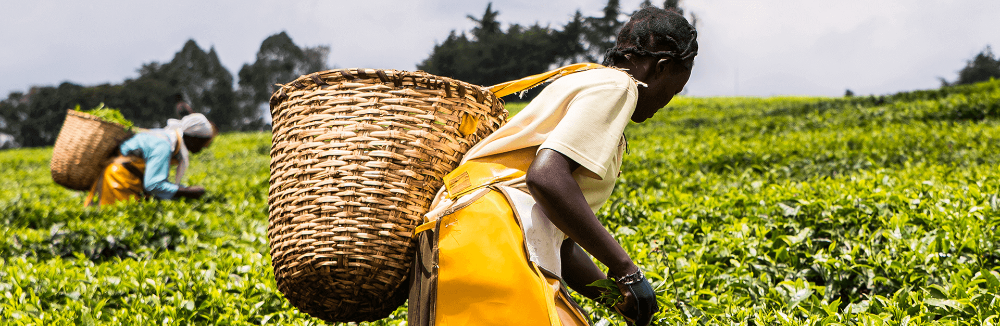

BARAKA CHAI MASALA 🇺🇬
BARAKA CHAI MASALA 🇺🇬
BARAKA CHAI MASALA 🇺🇬
BARAKA CHAI MASALA 🇺🇬

Inferred Mission for Baraka Chai Masala in Uganda
The mission is to become the preferred, high-quality spiced tea blend for Ugandan consumers by:
Delivering the Authentic Spiced Chai Experience: Offering a bold and aromatic flavor that appeals to the local preference for spiced tea, ensuring the product's blend of Kenyan black tea and authentic spices (like ginger, cardamom, and cinnamon) meets the high standards of taste and warmth desired by Ugandan tea drinkers.
Championing Quality and Freshness: Ensuring the tea retains its freshness and superior quality (as a Kenyan-sourced tea) through reliable distribution, guaranteeing a "perfect tea drinking moment in every cup" for the Ugandan consumer.
Establishing a Staple East African Brand: Positioning Baraka Chai Masala as a staple and reliable everyday tea ("Chai Upendayo" - The Tea You Love) that represents the rich tea heritage of the East African highlands in the Ugandan market.
Essentially, their goal is to translate the brand's commitment to quality, freshness, and aromatic flavor to the Ugandan consumer, competing as a premium and authentic spiced chai option.
Baraka Chai's General Core Mission
To provide a light, refreshing tea for everyday consumption while adding value to Kenyan tea and ensuring the tea retains its freshness so customers experience a perfect tea drinking moment in every cup.
The official, explicit Vision Statement for Baraka Chai Masala specifically targeting Uganda is not publicly stated by the brand.
However, based on the parent company's general goals (Gold Crown Beverages/Kericho Gold) and its overall strategy for East Africa, the vision for Baraka Chai Masala in Uganda can be summarized as follows:
Inferred Vision for Baraka Chai Masala in Uganda
The long-term vision is for Baraka Chai Masala to be recognized as Uganda's definitive and most loved spiced black tea, synonymous with an authentic, warming, and revitalizing tea ritual.
This vision can be broken down into three key areas:
>Market Leadership (The Staple Spiced Chai): To be the unrivaled market leader in the spiced tea segment, making the distinctive yellow pack a ubiquitous staple in every Ugandan household, market stall, and restaurant, known by the slogan "Chai Upendayo" (The Tea You Love).
>Brand Perception (The Authentic Experience): To establish the brand as the most trusted source of bold and aromatic East African spiced tea, where every sip connects the Ugandan consumer to the high-quality heritage and flavor of the Kenyan highlands and its authentic spices.
>Cultural Integration (The Daily Ritual): To be deeply integrated into the daily fabric of Ugandan life, serving as the go-to beverage for connection, hospitality, and a moment of personal indulgence that complements local culinary traditions.
In essence, the vision is to dominate the spiced tea category by delivering consistent superior quality and freshness that aligns perfectly with the Ugandan consumer's preference for strong, aromatic, and comforting tea.
Our teas are carefully hand-picked, often in lush, verdant fields like the one pictured, where skilled hands select only the finest leaves. After harvest, our master blenders employ time-honored techniques to dry, oxidize, and blend the leaves, preserving their natural integrity and maximizing their unique flavor profiles.
"Great tea is not just a beverage; it is a ritual, a connection to nature, and a moment of peace in a busy world."